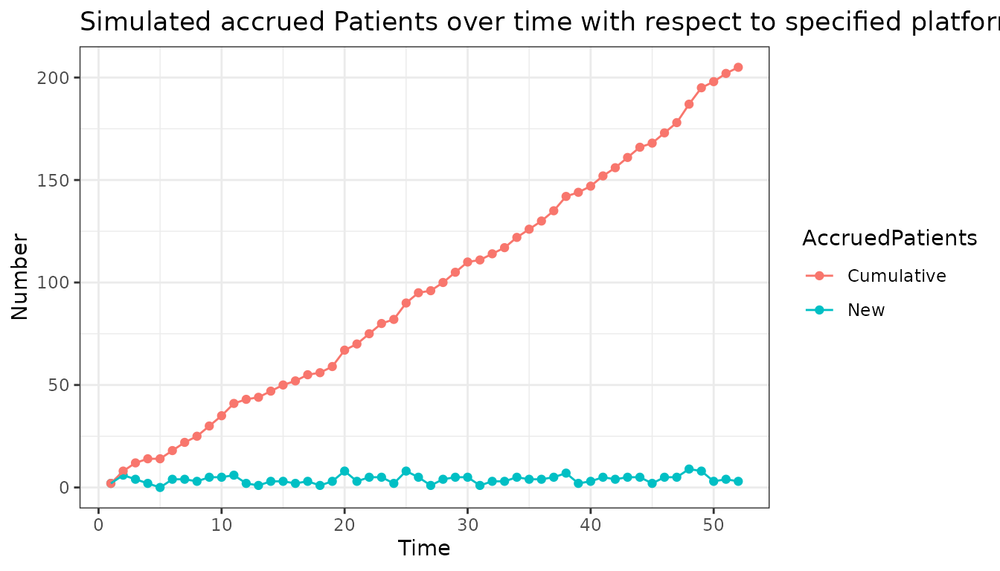
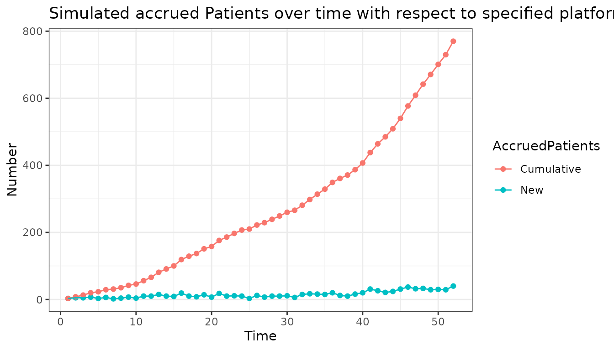

Recruitment Parameters Module Bootcamp
Source:vignettes/training/lRecrPars_bootcamp.Rmd
lRecrPars_bootcamp.RmdIntroduction
This document is an additional guideline to the recruitment module of the simple package. It can act like a bootcamp providing you with hands-on experience. Below will be some tasks of increasing complexity to make you comfortable using the module and find out difficulties.
Recap
To help you remember the essentials of the module’s functionality a short summary is provided. For further information on the module, please read the vignette first.
Function arguments
The module will have global variables as well as specific arguments that can be added and specified in the recruitment function
Functions
Constructor Function new_lRecrPars
The idea is to be able to include global variables of the simulation as well as any additional variable you would want to impact your recruitment.
The central function of the module is new_lRecrPars. It
defines the “rules” of recruitment you want to implement in the
simulation.
Tasks
Try to use the module to program the following tasks according to the instructions. You can display the solution upon clicking the code button. The examples of the vignette may serve as a helping hand. The plots below show what the plotted output could look like.
1. Create a scenario, where the number of patients recruited at every time step is taken from a binomial distribution with n = 20 and p = 0.2
x <- new_lRecrPars(
fnRecrProc = function(lPltfTrial, lAddArgs){
n_pat = rbinom(1, lAddArgs$n, lAddArgs$prob)
},
# here we define the parameters used in the function call
lAddArgs = list(n = 20,
prob = 0.2)
)
# the plot functions acts as a proxy for the actual simulation in which the object of class lRecrPars is used
plot(x)
2. Create a scenario where every 3rd time unit the number of patients recruited corresponds to the current time unit. In the remaining time units no recruitment happens.
x <- new_lRecrPars(
fnRecrProc = function(lPltfTrial, lAddArgs){
# if boolean variable lPltfTrial$lSnap$bEnrOpen is TRUE, then a number of patients as high as the current time step is recruited
n_pat <- lPltfTrial$lSnap$dCurrTime * lPltfTrial$lSnap$bEnrOpen
}
)
# Here we define the enrollment windows of the trial. It has to be a vector of the same length as the simulation duration which is by default set to 52.
plot(x,
bEnrOpen = c(rep(c(FALSE, FALSE, TRUE), length.out = 52)))
# # Alternatively:
# x <- new_lRecrPars(
# fnRecrProc = function(lPltfTrial, lAddArgs){
# if(lPltfTrial$lSnap$dCurrTime %% 3 == 0){
# n_pat <- lPltfTrial$lSnap$dCurrTime
# } else {
# n_pat <- 0
# }
# }
# )
#
# plot(x)3. Create a scenario where the number of patients recruited at every time step is drawn from a poisson distribution. The distribution parameter lambda depends on the number of active arms and the time period.
For time period 1-40: lambda = 5* number of active arms
For time period 41-52: lambda = 10* number of active arms
For time period 1-10: number of active arms = 1
For time period 11-30: number of active arms = 2
For time period 31-52: number of active arms = 3
*Hint: number of active arms is specified in the plot function, as this is not a feature of the lRecrPars module.
x <- new_lRecrPars(
fnRecrProc = function(lPltfTrial, lAddArgs){
# depending on the time unit, a different lambda is taken for the distribution.
if(lPltfTrial$lSnap$dCurrTime <= 40){
n_pat <- rpois(1, lambda = lAddArgs$lambda1 * lPltfTrial$lSnap$dActvIntr)
} else {
n_pat <- rpois(1, lambda = lAddArgs$lambda2 * lPltfTrial$lSnap$dActvIntr)
}
},
# here we set the different lambdas
lAddArgs = list(lambda1 = 5,
lambda2 = 10)
)
# here the number of active arms is specified for each time unit. It has to be a vector of the same length as the simulation duration which is by default set to 52.
plot(x,
dActvIntr = c(rep(1, 10), rep(2, 20), rep(3, 22)))
Remarks
Note that in scenario 1 the values of n and p could be directly written into the rbinom function without stating them in the lAddArgs argument. Perks of stating them in lAddArgs are the appearance in an overview you might want to print using summary() as well as efficiency if these arguments are used more than once.
Notice the alternative implementation of Task 2 in the solution, suggesting there are many ways of implementing a scenario depending on your programming preferences. The first implementation is suggested however, as the enrollment window is probably an external variable which this way can be accessed without directly having to add the argument into the function.
The global variables saved in the list lPltfTrial have a fixed name which can not be changed as it is implemented in many different modules. As mentioned above the vignette of the module lPltfTrial will contain an overview of all the global variables used in any module. The naming convention consists of lowerCamelCase with the first part being a letter describing the data type of the object(l = list, b = bool, v = vector, d = number)